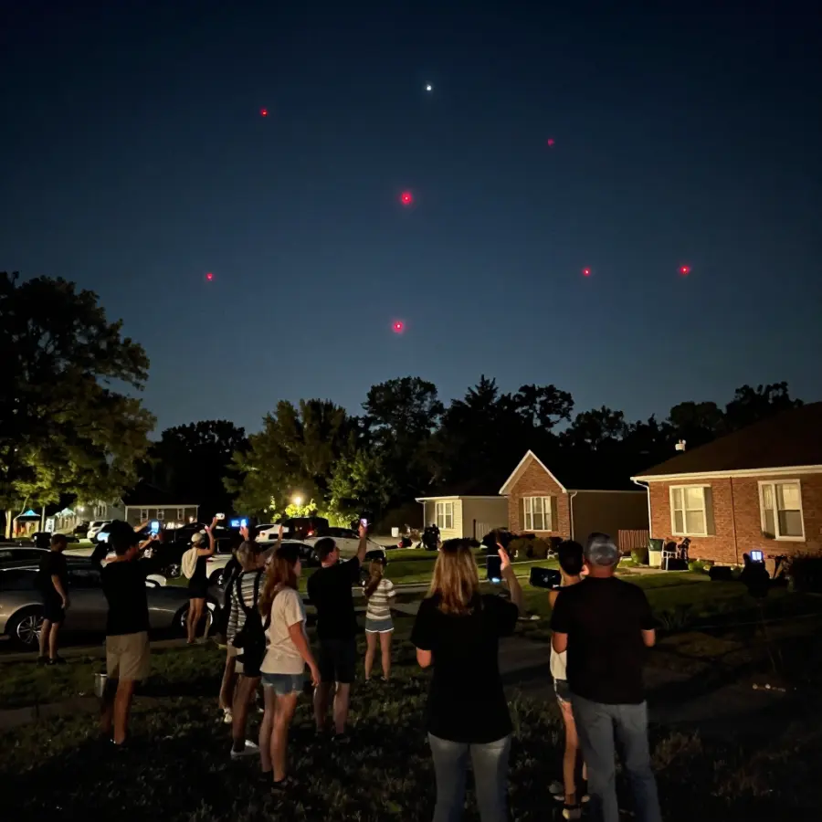

New Jersey Drones: The Mystery in the Sky!

Mysterious drones appeared over New Jersey neighborhoods - and nobody knows where they came from!
Imagine looking out your window at night and seeing strange glowing objects hovering over your neighborhood. They're not planes. They're not helicopters. They're drones - but not like any drones you've ever seen.
This is exactly what happened to residents of New Jersey. For weeks, mysterious drones appeared in the night sky, baffling everyone who saw them. The military, the government, and aviation experts all tried to explain them - but the mystery remains unsolved!
Overview
What Did People See?
The sightings began when residents started noticing unusual aircraft in the sky. These weren't normal drones you can buy at a store. Witnesses described:
- 🔴 Unusual lights: Red, white, and sometimes green lights in strange patterns
- 📏 Large size: Much bigger than hobby drones - some said car-sized!
- 🔇 Quiet operation: They made very little noise for their size
- ⏰ Night flights: They only appeared after dark
- 🛸 Strange movement: They could hover, fly fast, and change direction quickly
Witnesses described drones unlike any commercial models available to the public.
📱 Caught on Camera
Many residents recorded the drones with their phones. The videos show objects that don't match any known aircraft. Some appeared to fly in formation, as if they were working together!
Evidence
Historical work on New Jersey Drones is strongest when primary records, material traces, and later peer-reviewed analysis point in the same direction. This layered approach helps separate observations from retellings and reduces the risk of repeating popular but unsupported claims.
The Investigation
When reports started pouring in, officials took notice. The FBI, Department of Homeland Security, and even the military got involved. But their investigations only raised more questions!
Officials considered several possibilities:
🎮 Hobbyists: Could regular drone enthusiasts be responsible? Unlikely - these aircraft were too large, too sophisticated, and too coordinated.
🏢 Private Companies: Maybe a corporation was testing new technology? But no company came forward to claim responsibility.
🇺🇸 Military Operations: Some wondered if the U.S. military was conducting secret tests. The military denied any involvement.
🌐 Foreign Drones: Could another country be spying? Officials investigated but found no evidence of foreign involvement.

Residents gathered outside to watch the mysterious drones, recording them with their phones.
Competing Explanations
Competing explanations usually persist because each one fits part of the evidence while missing another part. Researchers test these models against chronology, physical constraints, and independent documentation to identify which interpretation requires the fewest assumptions.
Why Is This So Strange?
What makes the New Jersey drone mystery so puzzling?
- 🚫 No registered owners: All drones must be registered with the FAA - but these weren't
- 🌙 Night flights: Flying drones at night requires special permission
- 🏠 Over populated areas: This is heavily restricted for safety reasons
- 👁️ Never caught: Despite thousands of witnesses, no drone was ever captured or identified
🔍 Not Just New Jersey
Similar drone sightings were reported in other states too, including Colorado, Nebraska, and Kansas. Were they connected? Nobody knows!
The Theories
Without official answers, people came up with their own theories:
🛸 UFOs: Some believed the drones were extraterrestrial. Their unusual movement and appearance certainly seemed otherworldly!
🔬 Secret Technology: Maybe the government was testing advanced aircraft they don't want to admit exist.
🎥 Viral Marketing: Could it have been a publicity stunt for a movie or product? If so, nobody ever claimed credit.
🤖 Autonomous Drones: Some suggested AI-controlled drones that went rogue or were part of a test.
Open Questions
Open questions remain because source quality is uneven across time: some records are direct and detailed, while others are fragmentary or second-hand. Future archival discoveries, improved imaging, and more precise dating methods may refine conclusions without overturning well-supported core findings.
The Mystery Continues
After weeks of sightings, the drones stopped appearing as mysteriously as they had arrived. Officials never provided a clear explanation.
Were they military tests? Foreign surveillance? Pranksters with expensive toys? Or something we can't even imagine?
The New Jersey drone mystery remains one of the strangest unexplained phenomena in recent history - and the truth might be out there, waiting to be discovered!
📖 Recommended Reading
Want to learn more? Check out UFOs: Generals, Pilots, and Government Officials Go on the Record on Amazon for a deeper dive into this fascinating topic. (As an Amazon Associate, we earn from qualifying purchases.)
References & Further Reading
Editorial note: We cross-check claims across multiple independent sources. See our Editorial Policy.